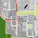

Werkstatt-Laden im MühlenMarkt
Öffnungszeiten
Mo:
08.30 - 13.00
Di - Mi:
08.30 - 17.00
Do:
08.30 - 18.00
Fr:
08.30 - 17.00
Was gibt es?
Vorallem Gebasteltes/Gewerkeltes wird verkauft, aber auch Spielzeug und Vieles mehr!
Position auf der Karte

Das könnte dich auch interessieren
MühlenMarkt
Mehr interessante Orte entdecken
← Startseite
← Karte